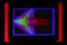

Software Download (Page 2)
Software Download (Page 2)
SPIRO.RD Spiro
Spiro is a simple DOS graphics program that draws patterns like a Spirograph.
When it starts, you can get rid of the filling by pressing F. You can stop
the automatic randomizing by pressing SHIFT+R, and randomize as you like
by pressing R. Or you can leave it alone and let it change on its own, like
a screen-saver. The curves being drawn are mathematically known as epicycloids
and hypocycloids. They have a mandala-like quality. If you stare at SPIRO
for awhile, you may start to feel kind of strange. If you feel *too* strange,
press Q to make the program stop.
VINE.RD Vine
Vine is based on an algorithm suggested by Clifford Pickover; it takes the
sine of the sine function. Some people call this algorithm "Popcorn,"
but in the startup mode I use, it looks more like a vine. In startup mode,
Vine moves across the screen in an undulating path, drawing branches out
from successive points. It also cycles the colors automatically. You can
sit and watch Vine like a screen-saver, or you can use the hot-keys to affect
what is going on. It's hard to remember the hot-keys, so you might try printing
the *.HLP file out for reference. More detailed information about the Vine
program can be found in the VINE.INF file included in VINE1EXE.ZIP.
CALIFE.RD Calife
Calife is a program written explicit for seeking the gnarl. What you see
at startup is nine different one-dimensional cellular automata (CAs for
short). If you left-click with your mouse on one of the nine patterns, the
others become mutations of the one you clicked. If you do this for awhile,
you may home in on a nice gnarly CA. What makes a CA gnarly? The idea is
that you don't want a CA that dies out --- in fact Calife automatically
nukes any of the CAs that dies out or starts repeating in an obvious way.
You also don't want a completely messy "seething dog-barf" CA.
Like Goldilocks, you seek the gnarly mean. But what is a CA? Basically the
one-dimensional CAs you see are spacetime diagrams of a line of cells; time
runs down the screen and jumps back to the top when it hits the bottom.
More info can be found in CALIFE.DOC, which is included in the CALI1EXE.ZIP.
This is the second time I made Calife available on the net; it has been
at santafe.edu early in 1994. But up till now, I was not making the source-code
available. The trick I use for making it run fast is the so-called "flywheel"
trick, which means that when I am going along a row updating cells, I manage
to re-use neighborhood information.
JULGNARL.RD Julgnarl
Julgnarl is a program where the user can seek the gnarl in a large space
of possibilities by selecting an attractive image and generating eight mutations
of it. In this context, a gnarly Julia set would be one which is not just
a simple closed curve (too orderly) and which is not some disconnected dusting
of pixels (too disorderly). The patterns in Julgnarl are Julia sets (named
after the French mathematician Gaston Julia, who invented them in 1918!)
A Julia set is gotten by iterating some kind of function on points in the
complex plane, and finding the boundary between the points whose iterations
get very large and the points whose iterations stay bounded. Quadratic Julia
sets are quite well known, and cubic Julia sets appear in, e.g., the software
package: Josh Gordon, Rudy Rucker and John Walker James Gleick's Chaos:
The Software, Autodesk 1990. But Julgnarl has, I believe, the first quartic
Julia sets ever computed. ("Quartic" means "based on equations
with highest power four".)
In the past, people trying to find higher-order Julia sets have made the
mistake (at least in my opinion it's a mistake because the shapes are not
very interesting) of staying with quadratic equations, but using quaternions
instead of complex numbers. There is a sense in which all of the quartic
Julia sets are cross-sections of a single, VERY gnarly eight-dimensional
object. By the same token the quadratic Julia sets form a four-dimensional
whole and the cubic Julia sets form a six-dimensional whole. You step along
the axes with the arrow keys and by varying the parameters.
The algorithm I use for Julgnarl is the inverse iteration technique described
in H.O.Peitgen and D.Saupe, THE SCIENCE OF FRACTAL IMAGES, Springer-Verlag,
1988; see also H.O.Peitgen and P.H.Richter, THE BEAUTY OF FRACTALS, Springer-Verlag,
1986. For an n-degree Julia set, you keep solving degree n equations. The
inverse iteration method is "holistic" in that you have to compute
the whole fractal to compute any part of it. This means that when you zoom
in you have to keep track of the points offscreen. I used a hash table for
this; the first time I've ever had call to use one of those! I didn't do
quintic Julia sets yet because (gnarly surprise in the History of Mathematics!)
there is no formula for solving fifth-degree equations. That is, there is
a quadratic formula to solve quadratic equations, formulas for cubic and
quartic equations, but no quintic formula. I could of course numerically
beat the fifth and higher-order equations to death; indeed I'd like to do
this for once and for all for arbitrary degree n. After the quadratics,
the cubics surprised me, and after the cubics the quartics (especially the
fart-shaped (sorry, but that's what it looks like!) PFFT.JUL) surprised
me again. I look forward to being surprised a *lot* by the n-degree Julias
one of these days.
These are the ZIP files:
CALI1EXE ZIP 266,456 12-05-94 11:28a
CALI1SRC ZIP 30,334 12-05-94 11:22a
JULG1EXE ZIP 114,369 12-07-94 1:11p
JULG1SRC ZIP 44,525 12-07-94 1:10p
SPIR1EXE ZIP 38,944 12-05-94 11:41a
SPIR1SRC ZIP 3,245 12-05-94 11:39a
VINE1EXE ZIP 70,352 12-05-94 10:57a
VINE1SRC ZIP 23,340 12-05-94 10:57a
14 file(s) 596,685 bytes
